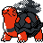

#017
Torkoal
Fire
Abilities: Drought, White Smoke, Shell Armor
Base stats BST 470
HP70
Attack85
Defense140
Speed20
Sp. Atk85
Sp. Def70
Evolution
None detected.
Level-up learnset
LevelMoveType
Lv. 1EmberFire
Lv. 1SmokescreenNormal
Lv. 4Rapid SpinNormal
Lv. 7SmogPoison
Lv. 12WithdrawWater
Lv. 14Fire SpinFire
Lv. 17CurseCurse T
Lv. 20Flame WheelFire
Lv. 23ProtectNormal
Lv. 28FlamethrowerFire
Lv. 31Body SlamNormal
Lv. 36Iron HeadSteel
Lv. 39AmnesiaPsychic
Lv. 42Fire BlastFire
Lv. 47Heat CrashFire
Lv. 48Heat WaveFire
Lv. 50ExplosionNormal
Lv. 55OverheatFire